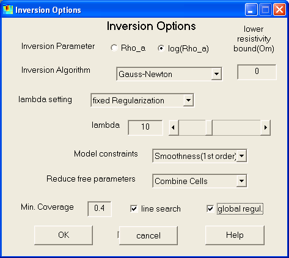
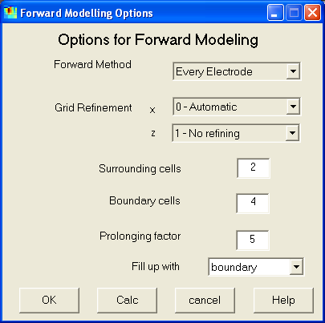
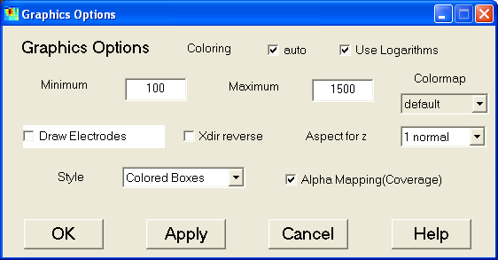

DC2DInvRes - Options Menu
Inversion Options
In the inverse options dialog defines the setup for treating the inverse problem.

- The inversion parameter can be the apparent resistivity or its logarithm(default).
- For log-inversion, an lower resistivity bound can be defined.
- Several inversion/regularization algorithms can be applied:
- Gauss-Newton (with explicit regularization)
- Truncated SVD inversion (implicit regularization)
- SIRT (simultaneous iterative reconstruction technique)
- Truncated least squares inversion (implicit regularization)
- The regularization strength can be set up in three ways
- fixed regularization strength (values of around 10 are reasonable) (default)
- automatic choice by L-curve analysis
- manual choice by scrolling through the models
- Enabling "keep constant" saves the determined regularization parameter
for subsequent iterations
- There are several ways to define model parameter weighting by setting the
matrix C:
- Equal Weighting (every has the same importance)
- Weighting by coverage (reduce the importance of bad covered cells)
- Smoothness constraints (minimizing first or second order derivatives
of the model)
(The 2nd order constraints have 3 variants which differ in the handling
of boundaries)
- A reduction of free parameters often leads to ore detailed results. This
can be done by deleting bad covered data (whose coverage is below minimum
coverage) or by combining cells in greater depths. Both can be combined (default).
- A line search is carried out to determine an appropriate step length using
a linear interpolation (default=on). It can significantly improve converge
speed for high non-linearity. However, it needs one additional forward calculation.
- The model constraints (e.g. smoothness) is applied to the model instead
of the model update (default). This can result in slower convergence, which
is ensured (in combination of line search) with global regularization.
The author recommends (=default values) the Gauss-Newton method using global
(better resolution properties) smoothness constraints of first(or second) order
(better handling of boundaries) with line search and a fixed lambda (of 1-100).
If chi^2 is much greater than 1 and the model shows less structure, lambda has
to be decreased. To much structure and over-fitted data require an increasment
of lambda. When starting the inversion, the "Manual inversion" option
can be use to find appropriate values optically.
Smoothness Constraints of 2nd oder are useful for delineating the boundaries
of small bodies, whereas 1st order behaves better for broad resistivity structures
as undulating basement.
However, other methods can be successfully applied, too. E.g. TLS (and SIRT
and TSVD) have the advantage of not forcing model characteristics, but can lead
to artifacts in the top layers. Similar holds for minimu length and weighting
by coverage.
Forward Calculation Options
The forward calculation is based on an Finite Difference Code with singularity
removal and mixed boundary conditions written in C++ by Schwarzbach and originates
from R.-U. Börner (TU Freiberg, Germany).
The following forward options control accuracy and speed of the forward calculation.
Since the accuracy of the forward response limits the data fit, the reciprocity
values have to be observed. If high reciprocity values (sd >5%) occur, it is
recommended to refine the model. This is generally done by increasing the z-refine
value and/or adding surrounding/boundary cells. However a larger grid significantly
increases the time used for forward calculation.

- Generally, the potentials for every electrode are computed and superposed
for the output. It is also possible (but slower) to simulate real dipoles.
As an approximation (which helds for small contrasts) the forward calculation
can also be done using the sensitivity matrix as linearized forward operator.
- When the model contains high resistivity contrasts, the solution can result
in bad accuracy. This can be avoided by grid refinement, both of the z-axis
(manually) and the x-axis (manually or automatic, which tries to yield equally-sized
blocks)
- In every FD simulation it is necessary to enlarge the model to get a good
approximation of boundary conditions. Is is done by several equally-sized
"surrounding" cells and several "boundary" cells enlarged
with a prolongation factor.
- At last, it is defined if the surrounding/boundary cells are filled up with
the model boundary cells (default) or with the layer resistivities as determined
by 1d-inversion.
Graphics Options
This dialog defines, how the model
and data sections are plotted.

- Coloring can be done automatical or manually by providing minimum and maximum
value.
- The logarithms of resistivity are plotted as well as the resistivity itself.
- Several color maps can be chosen.
- The user can decide, whether to draw electrodes or not.
- The x-axis may be reversed.
- An aspect ratio for the z-axis of 1 up to 10 can be chosen to visualize
long profile models well.
- The default way to plot model cells is with colored boxes (because it shows
how the model really looks like), but filled contourlines or smoothed image
are also possible.
- Generally, it is useful to blend out bad covered model cells by alpha mapping
to keep it out of interpretation.
Hotkey: Shift+G
Save Options
All Options can be saved as default values and are retrieved by the next start
oder "Reset Options".
Reset Options
All options are reset to the default (by user saved) options.